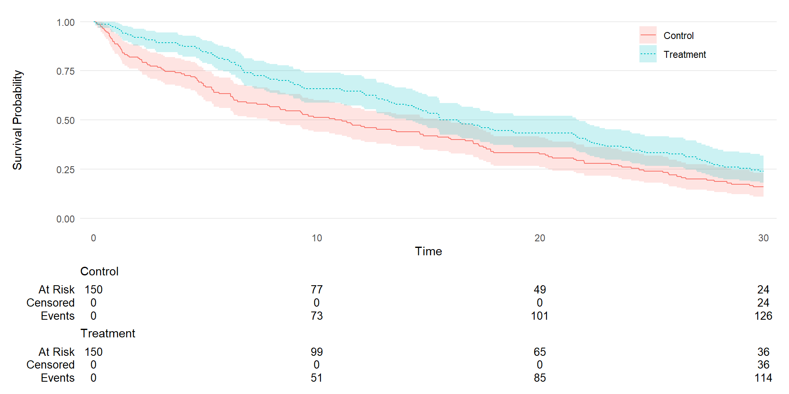

Équipe ONCOSTAT
Modules de cours de R
Analyses statistiques & tables standards
Dan Chaltiel
Avec le package üì¶ {grstat}
Plan du module
- Analyse statistique
- Modèles logistiques (
glm) et modèles de Cox (coxph) - Formatage en table
- Tests d’hypothèses
- Modèles logistiques (
- Sorties standards avec üì¶ {grstat}
- Tables des Adverse Events
- Graphiques des Adverse Events
- Création de projet standard (DEV)
1 Analyse statistique
Introduction
Pour les analyses statistiques, on utilise généralement des tests stats et des modèles de régression
Dans ce cours, on verra :
- Les tests pour variables numériques et catégorielles
- Les modèles linéaires, logistiques, et de Cox
Tests : variables numériques
Pour les variables numériques, on utilise soit le t-test, soit le test de Wilcoxon.
t = t.test(mpg ~ am, data=db)
t
#>
#> Welch Two Sample t-test
#>
#> data: mpg by am
#> t = -3.7671, df = 18.332, p-value = 0.001374
#> alternative hypothesis: true difference in means between group auto and group manual is not equal to 0
#> 95 percent confidence interval:
#> -11.280194 -3.209684
#> sample estimates:
#> mean in group auto mean in group manual
#> 17.14737 24.39231
t$p.value
#> [1] 0.001373638t = t.test(mpg~1, mu=17, data=db)
t
#>
#> One Sample t-test
#>
#> data: mpg
#> t = 2.9008, df = 31, p-value = 0.006788
#> alternative hypothesis: true mean is not equal to 17
#> 95 percent confidence interval:
#> 17.91768 22.26357
#> sample estimates:
#> mean of x
#> 20.09062
t$p.value
#> [1] 0.00678831L’interface traditionnelle est à risque d’erreur!
t.test(mtcars$mpg, mtcars$am)
#>
#> Welch Two Sample t-test
#>
#> data: mtcars$mpg and mtcars$am
#> t = 18.413, df = 31.425, p-value < 2.2e-16
#> alternative hypothesis: true difference in means is not equal to 0
#> 95 percent confidence interval:
#> 17.50519 21.86356
#> sample estimates:
#> mean of x mean of y
#> 20.09062 0.40625Ici, am est binaire 0/1 et est traité comme une valeur numérique (moyenne 0.4).
Tests : variables catégorielles
Pour les variables catégorielles, on utilise soit le test du Chi², soit le test exact de Fisher.
db = mtcars2 %>%
select(am, vs)
db
#> # A tibble: 32 × 2
#> am vs
#> <labelled> <labelled>
#> 1 manual vshaped
#> 2 manual vshaped
#> 3 manual straight
#> 4 auto straight
#> 5 auto vshaped
#> 6 auto straight
#> 7 auto vshaped
#> 8 auto straight
#> 9 auto straight
#> 10 auto straight
#> # ℹ 22 more rowstbl = table(db$am, db$vs)
cs = fisher.test(tbl)
cs
#>
#> Fisher's Exact Test for Count Data
#>
#> data: tbl
#> p-value = 0.4727
#> alternative hypothesis: true odds ratio is not equal to 1
#> 95 percent confidence interval:
#> 0.09441436 2.61414549
#> sample estimates:
#> odds ratio
#> 0.511233
cs$p.value
#> [1] 0.4726974Modélisation
Un modèle statistique décrit la relation entre une ou plusieurs variables explicatives (\(X_1, X_2, \dots, X_p\)) et une variable réponse (\(Y\)).
On veut prédire \(Y\) ou expliquer son lien avec \(X\). \[ Y = \beta_0 + \beta_1 X_1 + \beta_2 X_2 + \dots + \beta_p X_p + \varepsilon \]
Selon le type de réponse, on utilisera un modèle de régression différent, avec pour chacun des hypothèses spécifiques à valider.
Modélisation en R
- En R, la modélisation repose sur des fonctions comme
lm(),glm()etcoxph().
La syntaxe standard est la suivante :
L’objet
fitcontient toutes les informations de notre modèle.On peut visualiser le résultat avec la
summary(fit), ou mieux avecbroom::tidy(fit)ougtsummary::tbl_regression().
Données d’exemple
Pour commencer, on va utiliser les données simulées du dataset
aedegrstat_example()contenant : le grade des adverse eventsaegr, le fait qu’il soit SAEsae, et la causalitéaerel.On va d’abord modéliser
aegr(modèle linéaire), puissae(modèle logistique).Aperçu des données :
Modèle mixte
Il y a plusieurs lignes par patient donc il aurait fallu rajouter un effet aléatoire, mais ça dépasse le cadre de ce cours.
Modèle linéaire (Y continu)
summary(fit)
#>
#> Call:
#> lm(formula = aegr ~ sae + aerel, data = db$ae)
#>
#> Residuals:
#> Min 1Q Median 3Q Max
#> -1.6959 -0.6886 -0.6452 0.3544 3.3548
#>
#> Coefficients:
#> Estimate Std. Error t value Pr(>|t|)
#> (Intercept) 2.66664 0.14944 17.844 < 2e-16 ***
#> saeNo -0.95142 0.13460 -7.069 4.37e-12 ***
#> aerelExperimental treatment 0.02929 0.12824 0.228 0.819
#> aerelOther -0.06962 0.12828 -0.543 0.588
#> aerelRadiotherapy -0.02662 0.12491 -0.213 0.831
#> aerelStandard treatment -0.07004 0.12886 -0.544 0.587
#> ---
#> Signif. codes: 0 '***' 0.001 '**' 0.01 '*' 0.05 '.' 0.1 ' ' 1
#>
#> Residual standard error: 0.985 on 600 degrees of freedom
#> Multiple R-squared: 0.07785, Adjusted R-squared: 0.07016
#> F-statistic: 10.13 on 5 and 600 DF, p-value: 2.5e-09broom::tidy(fit, conf.int=TRUE)
#> # A tibble: 6 × 7
#> term estimate std.error statistic p.value conf.low conf.high
#> <chr> <dbl> <dbl> <dbl> <dbl> <dbl> <dbl>
#> 1 (Intercept) 2.67 0.149 17.8 1.89e-57 2.37 2.96
#> 2 saeNo -0.951 0.135 -7.07 4.37e-12 -1.22 -0.687
#> 3 aerelExperimental treatment 0.0293 0.128 0.228 8.19e- 1 -0.223 0.281
#> 4 aerelOther -0.0696 0.128 -0.543 5.88e- 1 -0.322 0.182
#> 5 aerelRadiotherapy -0.0266 0.125 -0.213 8.31e- 1 -0.272 0.219
#> 6 aerelStandard treatment -0.0700 0.129 -0.544 5.87e- 1 -0.323 0.183Characteristic |
Beta |
95% CI 1 |
p-value |
|---|---|---|---|
| Serious AE | |||
| Yes | — | — | |
| No | -0.95 | -1.2, -0.69 | <0.001 |
| aerel | |||
| Cancer | — | — | |
| Experimental treatment | 0.03 | -0.22, 0.28 | 0.8 |
| Other | -0.07 | -0.32, 0.18 | 0.6 |
| Radiotherapy | -0.03 | -0.27, 0.22 | 0.8 |
| Standard treatment | -0.07 | -0.32, 0.18 | 0.6 |
| 1
CI = Confidence Interval |
|||
Modèle linéaire : hypothèses
La relation entre \(Y\) et les covariables \(X\) doit être linéaire.
Sur la courbe des résidus en fonction des valeurs modélisées, on s’attend à une courbe horizontale.
Modèle logistique (Y binaire)
fit2
#>
#> Call: glm(formula = sae ~ aegr + aerel, family = binomial(link = "logit"),
#> data = db$ae)
#>
#> Coefficients:
#> (Intercept) aegr aerelExperimental treatment
#> 3.6240 -0.7305 0.7356
#> aerelOther aerelRadiotherapy aerelStandard treatment
#> -0.3606 0.2361 0.2495
#>
#> Degrees of Freedom: 605 Total (i.e. Null); 600 Residual
#> Null Deviance: 391.4
#> Residual Deviance: 346.8 AIC: 358.8summary(fit2)
#>
#> Call:
#> glm(formula = sae ~ aegr + aerel, family = binomial(link = "logit"),
#> data = db$ae)
#>
#> Coefficients:
#> Estimate Std. Error z value Pr(>|z|)
#> (Intercept) 3.6240 0.4314 8.401 < 2e-16 ***
#> aegr -0.7305 0.1171 -6.240 4.38e-10 ***
#> aerelExperimental treatment 0.7356 0.5025 1.464 0.143
#> aerelOther -0.3606 0.4109 -0.877 0.380
#> aerelRadiotherapy 0.2361 0.4394 0.537 0.591
#> aerelStandard treatment 0.2495 0.4602 0.542 0.588
#> ---
#> Signif. codes: 0 '***' 0.001 '**' 0.01 '*' 0.05 '.' 0.1 ' ' 1
#>
#> (Dispersion parameter for binomial family taken to be 1)
#>
#> Null deviance: 391.36 on 605 degrees of freedom
#> Residual deviance: 346.78 on 600 degrees of freedom
#> AIC: 358.78
#>
#> Number of Fisher Scoring iterations: 5broom::tidy(fit2, conf.int=TRUE)
#> # A tibble: 6 × 7
#> term estimate std.error statistic p.value conf.low conf.high
#> <chr> <dbl> <dbl> <dbl> <dbl> <dbl> <dbl>
#> 1 (Intercept) 3.62 0.431 8.40 4.41e-17 2.82 4.52
#> 2 aegr -0.730 0.117 -6.24 4.38e-10 -0.964 -0.503
#> 3 aerelExperimental treatment 0.736 0.502 1.46 1.43e- 1 -0.224 1.77
#> 4 aerelOther -0.361 0.411 -0.877 3.80e- 1 -1.18 0.440
#> 5 aerelRadiotherapy 0.236 0.439 0.537 5.91e- 1 -0.628 1.11
#> 6 aerelStandard treatment 0.250 0.460 0.542 5.88e- 1 -0.648 1.17Characteristic |
log(OR) 1 |
95% CI 1 |
p-value |
|---|---|---|---|
| AE grade | -0.73 | -0.96, -0.50 | <0.001 |
| aerel | |||
| Cancer | — | — | |
| Experimental treatment | 0.74 | -0.22, 1.8 | 0.14 |
| Other | -0.36 | -1.2, 0.44 | 0.4 |
| Radiotherapy | 0.24 | -0.63, 1.1 | 0.6 |
| Standard treatment | 0.25 | -0.65, 1.2 | 0.6 |
| 1
OR = Odds Ratio, CI = Confidence Interval |
|||
Modèle logistique : hypothèses
La relation entre \(Y\) et les covariables \(X\) doit être linéaire.
Sur la courbe des résidus en fonction des valeurs modélisées, on s’attend à une courbe horizontale.
La normalité des résidus n’est PAS une hypothèse du modèle logistique.
Analyses de survie
Pour l’exemple, on va simuler des données de survie selon une loi exponentielle, avec 3 covariables : le bras de traitement arm, un biomarqueur binaire bm_bin, et un biomarqueur continu bm_cont.
Show the code for get_df()
#' Simulated dataset
#'
#' @param n number of observations
#' @param beta_trt,beta_bm_cont,beta_bm_cont the true coefficients
#' @param eos non-informative censoring (end of study)
#' @param seed RNG seed
surv_example = function(n=300,
beta_trt=log(0.7), beta_bm_bin=log(1.5), beta_bm_cont=log(0.8),
eos=30, seed=42){
set.seed(seed)
# Generate covariates
baseline = tibble(
subjid = seq(n),
arm = rep(c(0,1), each=n/2),
bm_bin = rbinom(n, 1, 0.4),
bm_cont = rnorm(n),
)
rtn = baseline %>%
mutate(
# Generate exponential survival time
log_predlin = beta_trt*arm + beta_bm_bin*bm_bin + beta_bm_cont*bm_cont,
lambda0 = log(2)/10 / exp(beta_bm_bin*mean(bm_bin) + beta_bm_cont*mean(bm_cont)),
lambda = lambda0 * exp(log_predlin),
t_real = rexp(n, rate=lambda),
# Administrative censorship
t = pmin(t_real, eos),
event = as.numeric(t_real<=eos),
# labels
arm = factor(arm, labels=c("Control", "Treatment")),
bm_bin = factor(bm_bin, labels=c("Negative", "Positive")),
)
rtn %>%
select(subjid, arm, t, event, bm_bin, bm_cont)
} df = surv_example()
df
#> # A tibble: 300 × 6
#> subjid arm t event bm_bin bm_cont
#> <int> <fct> <dbl> <dbl> <fct> <dbl>
#> 1 1 Control 29.4 1 Positive -0.0407
#> 2 2 Control 23.7 1 Positive -1.55
#> 3 3 Control 28.6 1 Negative 1.17
#> 4 4 Control 30 0 Positive -0.274
#> 5 5 Control 1.38 1 Positive -0.468
#> 6 6 Control 2.18 1 Negative -1.24
#> 7 7 Control 0.942 1 Positive -0.00776
#> 8 8 Control 30 0 Negative -0.800
#> 9 9 Control 5.31 1 Positive -0.533
#> 10 10 Control 7.79 1 Positive 1.29
#> # ℹ 290 more rowsKaplan Meier & Log Rank
library(survival)
library(ggsurvfit)
km = survfit(Surv(t, event) ~ arm, data=df)
km
#> Call: survfit(formula = Surv(t, event) ~ arm, data = df)
#>
#> n events median 0.95LCL 0.95UCL
#> arm=Control 150 126 11.0 7.79 15.9
#> arm=Treatment 150 114 15.9 13.99 21.7
tidy_survfit(km, times=c(12,24)) %>%
select(strata, everything())
#> # A tibble: 4 × 16
#> strata time n.risk n.event n.censor cum.event cum.censor estimate std.error conf.high conf.low
#> <fct> <dbl> <dbl> <dbl> <dbl> <dbl> <dbl> <dbl> <dbl> <dbl> <dbl>
#> 1 arm=Control 12 70 80 0 80 0 0.467 0.0873 0.554 0.393
#> 2 arm=Control 24 39 31 0 111 0 0.260 0.138 0.341 0.198
#> 3 arm=Treatment 12 97 53 0 53 0 0.647 0.0604 0.728 0.575
#> 4 arm=Treatment 24 54 43 0 96 0 0.360 0.109 0.446 0.291
#> # ℹ 5 more variables: estimate_type <chr>, estimate_type_label <chr>, monotonicity_type <chr>,
#> # strata_label <chr>, conf.level <dbl>survdiff(Surv(t, event) ~ arm, data=df)
#> Call:
#> survdiff(formula = Surv(t, event) ~ arm, data = df)
#>
#> N Observed Expected (O-E)^2/E (O-E)^2/V
#> arm=Control 150 126 106 3.74 6.72
#> arm=Treatment 150 114 134 2.96 6.72
#>
#> Chisq= 6.7 on 1 degrees of freedom, p= 0.01
survdiff(Surv(t, event) ~ arm + strata(bm_bin), data=df)
#> Call:
#> survdiff(formula = Surv(t, event) ~ arm + strata(bm_bin), data = df)
#>
#> N Observed Expected (O-E)^2/E (O-E)^2/V
#> arm=Control 150 126 109 2.76 5.15
#> arm=Treatment 150 114 131 2.29 5.15
#>
#> Chisq= 5.1 on 1 degrees of freedom, p= 0.02Documentation: https://www.danieldsjoberg.com
survfit2(Surv(t, event) ~ arm, data=df) %>%
ggsurvfit(, linetype_aes = TRUE) +
add_confidence_interval() +
add_risktable(
risktable_stats = c("n.risk", "cum.censor", "cum.event")
) +
theme_ggsurvfit_KMunicate() +
scale_y_continuous(limits = c(0, 1)) +
scale_x_continuous(expand = c(0.02, 0)) +
theme(legend.position="inside", legend.position.inside = c(0.85, 0.85))
Modèle de Cox (Y survie)
fit_adj
#> Call:
#> coxph(formula = Surv(t, event) ~ arm + bm_bin + bm_cont, data = df)
#>
#> coef exp(coef) se(coef) z p
#> armTreatment -0.31975 0.72633 0.12998 -2.460 0.0139
#> bm_binPositive 0.26931 1.30907 0.13201 2.040 0.0413
#> bm_cont -0.16892 0.84458 0.07046 -2.397 0.0165
#>
#> Likelihood ratio test=16.87 on 3 df, p=0.0007502
#> n= 300, number of events= 240summary(fit_adj)
#> Call:
#> coxph(formula = Surv(t, event) ~ arm + bm_bin + bm_cont, data = df)
#>
#> n= 300, number of events= 240
#>
#> coef exp(coef) se(coef) z Pr(>|z|)
#> armTreatment -0.31975 0.72633 0.12998 -2.460 0.0139 *
#> bm_binPositive 0.26931 1.30907 0.13201 2.040 0.0413 *
#> bm_cont -0.16892 0.84458 0.07046 -2.397 0.0165 *
#> ---
#> Signif. codes: 0 '***' 0.001 '**' 0.01 '*' 0.05 '.' 0.1 ' ' 1
#>
#> exp(coef) exp(-coef) lower .95 upper .95
#> armTreatment 0.7263 1.3768 0.5630 0.9371
#> bm_binPositive 1.3091 0.7639 1.0106 1.6956
#> bm_cont 0.8446 1.1840 0.7356 0.9697
#>
#> Concordance= 0.585 (se = 0.02 )
#> Likelihood ratio test= 16.87 on 3 df, p=8e-04
#> Wald test = 16.82 on 3 df, p=8e-04
#> Score (logrank) test = 16.92 on 3 df, p=7e-04
confint(fit_adj)
#> 2.5 % 97.5 %
#> armTreatment -0.57450305 -0.06500688
#> bm_binPositive 0.01058439 0.52804332
#> bm_cont -0.30702431 -0.03081770broom::tidy(fit_adj, conf.int=TRUE)
#> # A tibble: 3 × 7
#> term estimate std.error statistic p.value conf.low conf.high
#> <chr> <dbl> <dbl> <dbl> <dbl> <dbl> <dbl>
#> 1 armTreatment -0.320 0.130 -2.46 0.0139 -0.575 -0.0650
#> 2 bm_binPositive 0.269 0.132 2.04 0.0413 0.0106 0.528
#> 3 bm_cont -0.169 0.0705 -2.40 0.0165 -0.307 -0.0308Modèle de Cox: hypothèses
Choix des groupes de référence
Le groupe de référence est le premier niveau de la variable. Si ce n’est pas un facteur, R prendra le premier par ordre alphabétique.
Les modèles :
Test de modèles emboîtés
La plupart des modèles donnent un test de Wald pour chaque élément.
Pour les variables catégorielles, on peut être intéressé par un test du rapport de vraissemblance qui teste la variable globalement (pas les niveaux indépendemment).
Il faut alors utiliser la fonction
anova()sur deux modèles emboîtés.
fit1 = coxph(Surv(t, event) ~ arm + bm_bin, data=df)
fit2 = coxph(Surv(t, event) ~ arm + bm_bin + bm_cont, data=df)
anova(fit1, fit2)
#> Analysis of Deviance Table
#> Cox model: response is Surv(t, event)
#> Model 1: ~ arm + bm_bin
#> Model 2: ~ arm + bm_bin + bm_cont
#> loglik Chisq Df Pr(>|Chi|)
#> 1 -1220.7
#> 2 -1217.8 5.778 1 0.01623 *
#> ---
#> Signif. codes: 0 '***' 0.001 '**' 0.01 '*' 0.05 '.' 0.1 ' ' 1Conclusion
Il y a beaucoup de façons de faire des modèles de régression en R.
Il y a beaucoup de packages différents.
- Possibilités infinies
- On peut parfois s’y perdre un peu
Attention à la validité des packages, qui reste difficile à démontrer (contrairement à SAS)
2 G√©n√©rer du contenu avec üì¶ {grstat}
Le package grstat üì¶
- Package interne au BBE
- Reprend les macros SAS validées
- Propose des sorties standardisées
Version
Cette présentation a été réalisée avec grstat v0.1.0.9009.
Documentation
Accessible dans RStudio et en ligne:
Fonctions
Fonctions stables et validées :
- Tableaux AE :
ae_table_grade()&ae_table_soc() - Graphiques AE :
ae_plot_grade()&butterfly_plot()
Fonctions en cours de développement :
- Swimmerplot & Waterfall-plot RECIST
- Forest-plot
- Sorties standard pour les modèles principaux
- Vignettes/Book de documentation
Liste
La liste des fonctions est accessible dans les références de la doc.
Données d’exemple
On va utiliser une base de données d’exemple.
library(grstat)
db = grstat_example(r=0.4)
attach(db, warn.conflicts=FALSE)
db
#> $enrolres
#> # A tibble: 200 × 4
#> subjid arm arm3 crfname
#> <int> <fct> <fct> <chr>
#> 1 1 Control Treatment B enrolres
#> 2 2 Control Control enrolres
#> 3 3 Treatment Treatment A enrolres
#> 4 4 Control Control enrolres
#> 5 5 Treatment Treatment A enrolres
#> 6 6 Treatment Treatment A enrolres
#> 7 7 Treatment Control enrolres
#> 8 8 Treatment Treatment A enrolres
#> 9 9 Control Treatment B enrolres
#> 10 10 Control Treatment B enrolres
#> # ℹ 190 more rows
#>
#> $ae
#> # A tibble: 622 × 7
#> subjid aesoc aeterm aegr sae aerel crfname
#> <int> <chr> <chr> <dbl> <fct> <chr> <chr>
#> 1 2 Eye disorders Eyelid disorders 1 No Expe… ae
#> 2 2 Cardiac disorders Heart failures 4 Yes Stan… ae
#> 3 2 Surgical and medical procedures Therapeutic procedur… 1 No Other ae
#> 4 3 Respiratory, thoracic and mediastinal disorders Pulmonary vascular d… 1 No Stan… ae
#> 5 3 Surgical and medical procedures Diagnostic procedures 3 No Canc… ae
#> 6 3 Neoplasms benign, malignant, and unspecified Malignant neoplasms 1 Yes Radi… ae
#> 7 4 Skin and subcutaneous tissue disorders Skin and subcutaneou… 1 No Canc… ae
#> 8 4 Investigations Blood analyses 3 No Stan… ae
#> 9 5 Endocrine disorders Adrenal gland disord… 2 No Expe… ae
#> 10 5 Ear and labyrinth disorders Vertigo and balance … 1 No Canc… ae
#> # ℹ 612 more rows
#>
#> $date_extraction
#> [1] "2024/01/01"
#>
#> $datetime_extraction
#> [1] "2024-01-01 01:00:00 CET"EDCimport
db n’est pas (encore) une base EDCimport mais fonctionne de la même façon.
AE par grade : tableaux
Treatment arm | |
|---|---|
All patients (N=200) | |
Patient maximum AE grade | |
No declared AE | 3 (2%) |
Grade 1 | 33 (16%) |
Grade 2 | 60 (30%) |
Grade 3 | 51 (26%) |
Grade 4 | 40 (20%) |
Grade 5 | 13 (6%) |
Patient had at least one AE of grade | |
No declared AE | 3 (2%) |
Grade ≥ 1 | 197 (98%) |
Grade ≥ 2 | 164 (82%) |
Grade ≥ 3 | 104 (52%) |
Grade ≥ 4 | 53 (26%) |
Grade = 5 | 13 (6%) |
Patient had at least one AE of grade | |
No declared AE | 3 (2%) |
Grade 1 | 160 (80%) |
Grade 2 | 121 (60%) |
Grade 3 | 64 (32%) |
Grade 4 | 46 (23%) |
Grade 5 | 13 (6%) |
Treatment arm | Total | ||
|---|---|---|---|
Control (N=80) | Treatment (N=120) | ||
Patient maximum AE grade | |||
No declared AE | 3 (4%) | 0 (0%) | 3 (2%) |
Grade 1 | 22 (28%) | 11 (9%) | 33 (16%) |
Grade 2 | 24 (30%) | 36 (30%) | 60 (30%) |
Grade 3 | 19 (24%) | 32 (27%) | 51 (26%) |
Grade 4 | 11 (14%) | 29 (24%) | 40 (20%) |
Grade 5 | 1 (1%) | 12 (10%) | 13 (6%) |
Patient had at least one AE of grade | |||
No declared AE | 3 (4%) | 0 (0%) | 3 (2%) |
Grade ≥ 1 | 77 (96%) | 120 (100%) | 197 (98%) |
Grade ≥ 2 | 55 (69%) | 109 (91%) | 164 (82%) |
Grade ≥ 3 | 31 (39%) | 73 (61%) | 104 (52%) |
Grade ≥ 4 | 12 (15%) | 41 (34%) | 53 (26%) |
Grade = 5 | 1 (1%) | 12 (10%) | 13 (6%) |
Patient had at least one AE of grade | |||
No declared AE | 3 (4%) | 0 (0%) | 3 (2%) |
Grade 1 | 66 (82%) | 94 (78%) | 160 (80%) |
Grade 2 | 44 (55%) | 77 (64%) | 121 (60%) |
Grade 3 | 21 (26%) | 43 (36%) | 64 (32%) |
Grade 4 | 12 (15%) | 34 (28%) | 46 (23%) |
Grade 5 | 1 (1%) | 12 (10%) | 13 (6%) |
ae %>%
filter(sae=="Yes") %>%
ae_table_grade(df_enrol=enrolres, arm="arm", ae_label="SAE") %>%
as_flextable(header_show_n=TRUE)Treatment arm | Total | ||
|---|---|---|---|
Control (N=80) | Treatment (N=120) | ||
Patient maximum SAE grade | |||
No declared SAE | 60 (75%) | 90 (75%) | 150 (75%) |
Grade 1 | 7 (9%) | 3 (2%) | 10 (5%) |
Grade 2 | 4 (5%) | 4 (3%) | 8 (4%) |
Grade 3 | 2 (2%) | 8 (7%) | 10 (5%) |
Grade 4 | 7 (9%) | 10 (8%) | 17 (8%) |
Grade 5 | 0 (0%) | 5 (4%) | 5 (2%) |
Patient had at least one SAE of grade | |||
No declared SAE | 60 (75%) | 90 (75%) | 150 (75%) |
Grade ≥ 1 | 20 (25%) | 30 (25%) | 50 (25%) |
Grade ≥ 2 | 13 (16%) | 27 (22%) | 40 (20%) |
Grade ≥ 3 | 9 (11%) | 23 (19%) | 32 (16%) |
Grade ≥ 4 | 7 (9%) | 15 (12%) | 22 (11%) |
Grade = 5 | 0 (0%) | 5 (4%) | 5 (2%) |
Patient had at least one SAE of grade | |||
No declared SAE | 60 (75%) | 90 (75%) | 150 (75%) |
Grade 1 | 7 (9%) | 4 (3%) | 11 (6%) |
Grade 2 | 6 (8%) | 5 (4%) | 11 (6%) |
Grade 3 | 4 (5%) | 10 (8%) | 14 (7%) |
Grade 4 | 7 (9%) | 10 (8%) | 17 (8%) |
Grade 5 | 0 (0%) | 5 (4%) | 5 (2%) |
Pour décrire une sous-population, il faut filtrer df_enrol:
enrolres2 = enrolres %>%
filter(arm=="Control")
ae %>%
ae_table_grade(df_enrol=enrolres2, arm="arm") %>%
as_flextable(header_show_n=TRUE)Treatment arm | Total | ||
|---|---|---|---|
Control (N=80) | Treatment (N=0) | ||
Patient maximum AE grade | |||
No declared AE | 3 (4%) | 0 (NA) | 3 (4%) |
Grade 1 | 22 (28%) | 0 (NA) | 22 (28%) |
Grade 2 | 24 (30%) | 0 (NA) | 24 (30%) |
Grade 3 | 19 (24%) | 0 (NA) | 19 (24%) |
Grade 4 | 11 (14%) | 0 (NA) | 11 (14%) |
Grade 5 | 1 (1%) | 0 (NA) | 1 (1%) |
Patient had at least one AE of grade | |||
No declared AE | 3 (4%) | 0 (NA) | 3 (4%) |
Grade ≥ 1 | 77 (96%) | 0 (NA) | 77 (96%) |
Grade ≥ 2 | 55 (69%) | 0 (NA) | 55 (69%) |
Grade ≥ 3 | 31 (39%) | 0 (NA) | 31 (39%) |
Grade ≥ 4 | 12 (15%) | 0 (NA) | 12 (15%) |
Grade = 5 | 1 (1%) | 0 (NA) | 1 (1%) |
Patient had at least one AE of grade | |||
No declared AE | 3 (4%) | 0 (NA) | 3 (4%) |
Grade 1 | 66 (82%) | 0 (NA) | 66 (82%) |
Grade 2 | 44 (55%) | 0 (NA) | 44 (55%) |
Grade 3 | 21 (26%) | 0 (NA) | 21 (26%) |
Grade 4 | 12 (15%) | 0 (NA) | 12 (15%) |
Grade 5 | 1 (1%) | 0 (NA) | 1 (1%) |
On peut modifier le résultat avant de passer en flextable:
ae %>%
ae_table_grade(df_enrol=enrolres, arm="arm") %>%
filter(!variable %in% c("Grade 1", "Grade 2")) %>%
as_flextable(header_show_n=TRUE)Treatment arm | Total | ||
|---|---|---|---|
Control (N=80) | Treatment (N=120) | ||
Patient maximum AE grade | |||
No declared AE | 3 (4%) | 0 (0%) | 3 (2%) |
Grade 3 | 19 (24%) | 32 (27%) | 51 (26%) |
Grade 4 | 11 (14%) | 29 (24%) | 40 (20%) |
Grade 5 | 1 (1%) | 12 (10%) | 13 (6%) |
Patient had at least one AE of grade | |||
No declared AE | 3 (4%) | 0 (0%) | 3 (2%) |
Grade ≥ 1 | 77 (96%) | 120 (100%) | 197 (98%) |
Grade ≥ 2 | 55 (69%) | 109 (91%) | 164 (82%) |
Grade ≥ 3 | 31 (39%) | 73 (61%) | 104 (52%) |
Grade ≥ 4 | 12 (15%) | 41 (34%) | 53 (26%) |
Grade = 5 | 1 (1%) | 12 (10%) | 13 (6%) |
Patient had at least one AE of grade | |||
No declared AE | 3 (4%) | 0 (0%) | 3 (2%) |
Grade 3 | 21 (26%) | 43 (36%) | 64 (32%) |
Grade 4 | 12 (15%) | 34 (28%) | 46 (23%) |
Grade 5 | 1 (1%) | 12 (10%) | 13 (6%) |
AE par grade : graphiques
AE par SOC : tableaux
All patients (N=200) | |||||||
|---|---|---|---|---|---|---|---|
CTCAE SOC | G1 | G2 | G3 | G4 | G5 | NA | Tot |
Congenital, familial and genetic disorders | 24 (12%) | 14 (7%) | 7 (4%) | 4 (2%) | 2 (1%) | 51 (26%) | |
Social circumstances | 17 (8%) | 15 (8%) | 7 (4%) | 6 (3%) | 45 (22%) | ||
Surgical and medical procedures | 24 (12%) | 5 (2%) | 9 (4%) | 3 (2%) | 2 (1%) | 43 (22%) | |
Neoplasms benign, malignant, and unspecified | 16 (8%) | 12 (6%) | 2 (1%) | 7 (4%) | 2 (1%) | 39 (20%) | |
Eye disorders | 19 (10%) | 6 (3%) | 8 (4%) | 2 (1%) | 35 (18%) | ||
Pregnancy, puerperium and perinatal conditions | 18 (9%) | 8 (4%) | 6 (3%) | 1 (0%) | 33 (16%) | ||
Cardiac disorders | 11 (6%) | 7 (4%) | 4 (2%) | 6 (3%) | 2 (1%) | 30 (15%) | |
Injury, poisoning and procedural complications | 12 (6%) | 8 (4%) | 8 (4%) | 1 (0%) | 1 (0%) | 30 (15%) | |
Immune system disorders | 12 (6%) | 8 (4%) | 4 (2%) | 3 (2%) | 27 (14%) | ||
Endocrine disorders | 10 (5%) | 7 (4%) | 4 (2%) | 3 (2%) | 24 (12%) | ||
Hepatobiliary disorders | 13 (6%) | 9 (4%) | 1 (0%) | 1 (0%) | 24 (12%) | ||
Psychiatric disorders | 15 (8%) | 3 (2%) | 3 (2%) | 2 (1%) | 1 (0%) | 24 (12%) | |
Vascular disorders | 10 (5%) | 8 (4%) | 2 (1%) | 1 (0%) | 1 (0%) | 22 (11%) | |
Musculoskeletal and connective tissue disorders | 8 (4%) | 6 (3%) | 2 (1%) | 5 (2%) | 21 (10%) | ||
Respiratory, thoracic and mediastinal disorders | 9 (4%) | 5 (2%) | 2 (1%) | 1 (0%) | 1 (0%) | 18 (9%) | |
Ear and labyrinth disorders | 9 (4%) | 6 (3%) | 1 (0%) | 16 (8%) | |||
Metabolism and nutrition disorders | 7 (4%) | 3 (2%) | 4 (2%) | 14 (7%) | |||
General disorders and administration site conditions | 8 (4%) | 3 (2%) | 1 (0%) | 12 (6%) | |||
Nervous system disorders | 6 (3%) | 5 (2%) | 1 (0%) | 12 (6%) | |||
Skin and subcutaneous tissue disorders | 4 (2%) | 5 (2%) | 1 (0%) | 2 (1%) | 12 (6%) | ||
Infections and infestations | 5 (2%) | 4 (2%) | 1 (0%) | 10 (5%) | |||
Blood and lymphatic system disorders | 6 (3%) | 1 (0%) | 1 (0%) | 1 (0%) | 9 (4%) | ||
Gastrointestinal disorders | 2 (1%) | 2 (1%) | 4 (2%) | 1 (0%) | 9 (4%) | ||
Reproductive system and breast disorders | 6 (3%) | 3 (2%) | 9 (4%) | ||||
Investigations | 4 (2%) | 2 (1%) | 1 (0%) | 1 (0%) | 8 (4%) | ||
Renal and urinary disorders | 1 (0%) | 3 (2%) | 1 (0%) | 1 (0%) | 6 (3%) | ||
No Declared AE | 3 (2%) | 3 (2%) | |||||
Control (N=80) | Treatment (N=120) | |||||||||||||
|---|---|---|---|---|---|---|---|---|---|---|---|---|---|---|
CTCAE SOC | G1 | G2 | G3 | G4 | G5 | NA | Tot | G1 | G2 | G3 | G4 | G5 | NA | Tot |
Congenital, familial and genetic disorders | 12 (15%) | 5 (6%) | 1 (1%) | 2 (2%) | 20 (25%) | 12 (10%) | 9 (8%) | 6 (5%) | 2 (2%) | 2 (2%) | 31 (26%) | |||
Social circumstances | 8 (10%) | 4 (5%) | 2 (2%) | 14 (18%) | 9 (8%) | 11 (9%) | 5 (4%) | 6 (5%) | 31 (26%) | |||||
Surgical and medical procedures | 16 (20%) | 1 (1%) | 2 (2%) | 19 (24%) | 8 (7%) | 4 (3%) | 7 (6%) | 3 (2%) | 2 (2%) | 24 (20%) | ||||
Neoplasms benign, malignant, and unspecified | 7 (9%) | 5 (6%) | 3 (4%) | 1 (1%) | 16 (20%) | 9 (8%) | 7 (6%) | 2 (2%) | 4 (3%) | 1 (1%) | 23 (19%) | |||
Eye disorders | 7 (9%) | 1 (1%) | 3 (4%) | 1 (1%) | 12 (15%) | 12 (10%) | 5 (4%) | 5 (4%) | 1 (1%) | 23 (19%) | ||||
Pregnancy, puerperium and perinatal conditions | 8 (10%) | 2 (2%) | 1 (1%) | 11 (14%) | 10 (8%) | 6 (5%) | 5 (4%) | 1 (1%) | 22 (18%) | |||||
Cardiac disorders | 6 (8%) | 3 (4%) | 2 (2%) | 1 (1%) | 12 (15%) | 5 (4%) | 4 (3%) | 2 (2%) | 5 (4%) | 2 (2%) | 18 (15%) | |||
Injury, poisoning and procedural complications | 5 (6%) | 6 (8%) | 4 (5%) | 15 (19%) | 7 (6%) | 2 (2%) | 4 (3%) | 1 (1%) | 1 (1%) | 15 (12%) | ||||
Immune system disorders | 7 (9%) | 2 (2%) | 2 (2%) | 11 (14%) | 5 (4%) | 6 (5%) | 2 (2%) | 3 (2%) | 16 (13%) | |||||
Endocrine disorders | 4 (5%) | 4 (5%) | 2 (2%) | 1 (1%) | 11 (14%) | 6 (5%) | 3 (2%) | 2 (2%) | 2 (2%) | 13 (11%) | ||||
Hepatobiliary disorders | 1 (1%) | 5 (6%) | 1 (1%) | 7 (9%) | 12 (10%) | 4 (3%) | 1 (1%) | 17 (14%) | ||||||
Psychiatric disorders | 6 (8%) | 2 (2%) | 1 (1%) | 9 (11%) | 9 (8%) | 1 (1%) | 2 (2%) | 2 (2%) | 1 (1%) | 15 (12%) | ||||
Vascular disorders | 7 (9%) | 2 (2%) | 1 (1%) | 10 (12%) | 3 (2%) | 6 (5%) | 1 (1%) | 1 (1%) | 1 (1%) | 12 (10%) | ||||
Musculoskeletal and connective tissue disorders | 3 (4%) | 1 (1%) | 1 (1%) | 5 (6%) | 5 (4%) | 6 (5%) | 1 (1%) | 4 (3%) | 16 (13%) | |||||
Respiratory, thoracic and mediastinal disorders | 1 (1%) | 3 (4%) | 2 (2%) | 6 (8%) | 8 (7%) | 2 (2%) | 1 (1%) | 1 (1%) | 12 (10%) | |||||
Ear and labyrinth disorders | 4 (5%) | 3 (4%) | 7 (9%) | 5 (4%) | 3 (2%) | 1 (1%) | 9 (8%) | |||||||
Metabolism and nutrition disorders | 4 (5%) | 1 (1%) | 1 (1%) | 6 (8%) | 3 (2%) | 2 (2%) | 3 (2%) | 8 (7%) | ||||||
General disorders and administration site conditions | 4 (5%) | 1 (1%) | 1 (1%) | 6 (8%) | 4 (3%) | 2 (2%) | 6 (5%) | |||||||
Nervous system disorders | 2 (2%) | 1 (1%) | 3 (4%) | 4 (3%) | 5 (4%) | 9 (8%) | ||||||||
Skin and subcutaneous tissue disorders | 3 (4%) | 2 (2%) | 5 (6%) | 1 (1%) | 3 (2%) | 1 (1%) | 2 (2%) | 7 (6%) | ||||||
Infections and infestations | 4 (5%) | 2 (2%) | 6 (8%) | 1 (1%) | 2 (2%) | 1 (1%) | 4 (3%) | |||||||
Blood and lymphatic system disorders | 3 (4%) | 1 (1%) | 4 (5%) | 3 (2%) | 1 (1%) | 1 (1%) | 5 (4%) | |||||||
Gastrointestinal disorders | 2 (2%) | 2 (2%) | 4 (3%) | 1 (1%) | 9 (8%) | |||||||||
Reproductive system and breast disorders | 1 (1%) | 1 (1%) | 2 (2%) | 5 (4%) | 2 (2%) | 7 (6%) | ||||||||
Investigations | 1 (1%) | 1 (1%) | 1 (1%) | 3 (4%) | 3 (2%) | 1 (1%) | 1 (1%) | 5 (4%) | ||||||
Renal and urinary disorders | 3 (4%) | 3 (4%) | 1 (1%) | 1 (1%) | 1 (1%) | 3 (2%) | ||||||||
No Declared AE | 3 (4%) | 3 (4%) | ||||||||||||
Idem, pour décrire une sous-population, il faut filtrer df_enrol:
enrolres2 = enrolres %>% head(50)
ae %>%
ae_table_soc(df_enrol=enrolres2, arm="arm") %>%
as_flextable()Control (N=18) | Treatment (N=32) | |||||||||||||
|---|---|---|---|---|---|---|---|---|---|---|---|---|---|---|
CTCAE SOC | G1 | G2 | G3 | G4 | G5 | NA | Tot | G1 | G2 | G3 | G4 | G5 | NA | Tot |
Congenital, familial and genetic disorders | 3 (17%) | 2 (11%) | 1 (6%) | 6 (33%) | 6 (19%) | 1 (3%) | 1 (3%) | 8 (25%) | ||||||
Injury, poisoning and procedural complications | 5 (28%) | 4 (22%) | 9 (50%) | 2 (6%) | 1 (3%) | 2 (6%) | 5 (16%) | |||||||
Social circumstances | 3 (17%) | 2 (11%) | 1 (6%) | 6 (33%) | 4 (12%) | 2 (6%) | 1 (3%) | 1 (3%) | 8 (25%) | |||||
Neoplasms benign, malignant, and unspecified | 2 (11%) | 2 (11%) | 1 (3%) | 4 (12%) | 2 (6%) | 1 (3%) | 8 (25%) | |||||||
Cardiac disorders | 1 (6%) | 1 (6%) | 2 (11%) | 2 (6%) | 2 (6%) | 1 (3%) | 1 (3%) | 6 (19%) | ||||||
Surgical and medical procedures | 1 (6%) | 2 (11%) | 3 (17%) | 2 (6%) | 2 (6%) | 1 (3%) | 5 (16%) | |||||||
Hepatobiliary disorders | 1 (6%) | 1 (6%) | 2 (11%) | 4 (12%) | 1 (3%) | 5 (16%) | ||||||||
Musculoskeletal and connective tissue disorders | 1 (6%) | 1 (6%) | 1 (3%) | 3 (9%) | 2 (6%) | 6 (19%) | ||||||||
Psychiatric disorders | 1 (6%) | 1 (6%) | 3 (9%) | 1 (3%) | 1 (3%) | 1 (3%) | 6 (19%) | |||||||
Pregnancy, puerperium and perinatal conditions | 1 (6%) | 1 (6%) | 3 (9%) | 2 (6%) | 5 (16%) | |||||||||
Ear and labyrinth disorders | 1 (6%) | 1 (6%) | 2 (6%) | 2 (6%) | 4 (12%) | |||||||||
Endocrine disorders | 1 (6%) | 1 (6%) | 1 (6%) | 3 (17%) | 2 (6%) | 2 (6%) | ||||||||
Eye disorders | 2 (11%) | 2 (11%) | 2 (6%) | 1 (3%) | 3 (9%) | |||||||||
Skin and subcutaneous tissue disorders | 1 (6%) | 1 (6%) | 2 (11%) | 2 (6%) | 1 (3%) | 3 (9%) | ||||||||
Immune system disorders | 1 (6%) | 1 (6%) | 2 (11%) | 2 (6%) | 2 (6%) | |||||||||
Respiratory, thoracic and mediastinal disorders | 2 (6%) | 1 (3%) | 1 (3%) | 4 (12%) | ||||||||||
Vascular disorders | 2 (11%) | 2 (11%) | 2 (6%) | 2 (6%) | ||||||||||
Gastrointestinal disorders | 2 (6%) | 1 (3%) | 3 (9%) | |||||||||||
General disorders and administration site conditions | 1 (6%) | 1 (6%) | 2 (6%) | 2 (6%) | ||||||||||
Investigations | 1 (6%) | 1 (6%) | 1 (6%) | 3 (17%) | ||||||||||
Metabolism and nutrition disorders | 2 (6%) | 1 (3%) | 3 (9%) | |||||||||||
Renal and urinary disorders | 1 (3%) | 1 (3%) | 2 (6%) | |||||||||||
Reproductive system and breast disorders | 2 (6%) | 2 (6%) | ||||||||||||
Nervous system disorders | 1 (6%) | 1 (6%) | ||||||||||||
No Declared AE | 1 (6%) | 1 (6%) | ||||||||||||
Control (N=80) | Treatment (N=120) | ||||||||||||||
|---|---|---|---|---|---|---|---|---|---|---|---|---|---|---|---|
CTCAE SOC | CTCAE v4.0 Term | G1 | G2 | G3 | G4 | G5 | NA | Tot | G1 | G2 | G3 | G4 | G5 | NA | Tot |
Congenital, familial and genetic disorders | Chromosomal abnormalities | 6 (8%) | 1 (1%) | 1 (1%) | 8 (10%) | 5 (4%) | 3 (2%) | 2 (2%) | 10 (8%) | ||||||
Congenital nervous system disorders | 2 (2%) | 2 (2%) | 4 (5%) | 4 (3%) | 1 (1%) | 5 (4%) | |||||||||
Familial hematologic disorders | 4 (5%) | 1 (1%) | 5 (6%) | 2 (2%) | 1 (1%) | 3 (2%) | 2 (2%) | 8 (7%) | |||||||
Hereditary connective tissue disorders | 2 (2%) | 2 (2%) | 1 (1%) | 5 (6%) | 5 (4%) | 4 (3%) | 1 (1%) | 2 (2%) | 12 (10%) | ||||||
Social circumstances | Cultural issues | 3 (4%) | 1 (1%) | 4 (5%) | 2 (2%) | 1 (1%) | 2 (2%) | 1 (1%) | 6 (5%) | ||||||
Economic conditions affecting care | 1 (1%) | 1 (1%) | 1 (1%) | 3 (4%) | 1 (1%) | 3 (2%) | 2 (2%) | 6 (5%) | |||||||
Family support issues | 1 (1%) | 1 (1%) | 4 (3%) | 4 (3%) | 3 (2%) | 2 (2%) | 13 (11%) | ||||||||
Social and environmental issues | 3 (4%) | 2 (2%) | 1 (1%) | 6 (8%) | 4 (3%) | 3 (2%) | 1 (1%) | 8 (7%) | |||||||
Surgical and medical procedures | Device implantation procedures | 10 (12%) | 10 (12%) | 3 (2%) | 1 (1%) | 2 (2%) | 1 (1%) | 7 (6%) | |||||||
Diagnostic procedures | 4 (5%) | 1 (1%) | 5 (6%) | 5 (4%) | 1 (1%) | 4 (3%) | 1 (1%) | 11 (9%) | |||||||
Surgical complications | 1 (1%) | 1 (1%) | 2 (2%) | 1 (1%) | 3 (2%) | 2 (2%) | 1 (1%) | 7 (6%) | |||||||
Therapeutic procedures | 1 (1%) | 1 (1%) | 2 (2%) | 1 (1%) | 1 (1%) | ||||||||||
Neoplasms benign, malignant, and unspecified | Benign neoplasms | 2 (2%) | 1 (1%) | 1 (1%) | 4 (5%) | 2 (2%) | 4 (3%) | 1 (1%) | 2 (2%) | 9 (8%) | |||||
Malignant neoplasms | 3 (4%) | 2 (2%) | 5 (6%) | 3 (2%) | 2 (2%) | 1 (1%) | 2 (2%) | 8 (7%) | |||||||
Neoplasms unspecified | 2 (2%) | 1 (1%) | 1 (1%) | 4 (5%) | 3 (2%) | 3 (2%) | |||||||||
Tumor progression | 2 (2%) | 1 (1%) | 3 (4%) | 2 (2%) | 1 (1%) | 1 (1%) | 4 (3%) | ||||||||
Eye disorders | Corneal disorders | 3 (4%) | 1 (1%) | 4 (5%) | 1 (1%) | 2 (2%) | 1 (1%) | 4 (3%) | |||||||
Eyelid disorders | 2 (2%) | 2 (2%) | 4 (3%) | 2 (2%) | 6 (5%) | ||||||||||
Retinal disorders | 1 (1%) | 1 (1%) | 2 (2%) | 4 (3%) | 2 (2%) | 1 (1%) | 7 (6%) | ||||||||
Vision disorders | 2 (2%) | 1 (1%) | 2 (2%) | 5 (6%) | 5 (4%) | 3 (2%) | 8 (7%) | ||||||||
Pregnancy, puerperium and perinatal conditions | Breastfeeding issues | 4 (5%) | 1 (1%) | 5 (6%) | 2 (2%) | 2 (2%) | |||||||||
Fetal complications | 2 (2%) | 2 (2%) | 1 (1%) | 2 (2%) | 2 (2%) | 5 (4%) | |||||||||
Labor and delivery complications | 1 (1%) | 1 (1%) | 1 (1%) | 3 (4%) | 6 (5%) | 3 (2%) | 9 (8%) | ||||||||
Pregnancy complications | 2 (2%) | 2 (2%) | 3 (2%) | 1 (1%) | 1 (1%) | 1 (1%) | 6 (5%) | ||||||||
Injury, poisoning and procedural complications | Poisonings | 1 (1%) | 3 (4%) | 1 (1%) | 5 (6%) | 2 (2%) | 1 (1%) | 1 (1%) | 4 (3%) | ||||||
Procedural complications | 1 (1%) | 2 (2%) | 1 (1%) | 4 (5%) | 2 (2%) | 1 (1%) | 3 (2%) | ||||||||
Radiation-related toxicities | 1 (1%) | 1 (1%) | 2 (2%) | 1 (1%) | 2 (2%) | 2 (2%) | 5 (4%) | ||||||||
Traumatic injuries | 2 (2%) | 1 (1%) | 2 (2%) | 5 (6%) | 4 (3%) | 1 (1%) | 5 (4%) | ||||||||
Cardiac disorders | Cardiac arrhythmias | 2 (2%) | 1 (1%) | 3 (4%) | 2 (2%) | 4 (3%) | 6 (5%) | ||||||||
Cardiac valve disorders | 1 (1%) | 1 (1%) | 2 (2%) | 1 (1%) | 1 (1%) | 1 (1%) | 1 (1%) | 2 (2%) | 6 (5%) | ||||||
Coronary artery disorders | 1 (1%) | 1 (1%) | 2 (2%) | 1 (1%) | 4 (3%) | 5 (4%) | |||||||||
Heart failures | 3 (4%) | 1 (1%) | 1 (1%) | 1 (1%) | 6 (8%) | 1 (1%) | 1 (1%) | 2 (2%) | |||||||
Immune system disorders | Autoimmune disorders | 4 (5%) | 4 (5%) | 1 (1%) | 1 (1%) | 2 (2%) | 4 (3%) | ||||||||
Hypersensitivity conditions | 2 (2%) | 2 (2%) | 2 (2%) | 1 (1%) | 1 (1%) | 1 (1%) | 5 (4%) | ||||||||
Immunodeficiency | 2 (2%) | 1 (1%) | 3 (4%) | 1 (1%) | 1 (1%) | ||||||||||
Inflammatory responses | 1 (1%) | 2 (2%) | 3 (4%) | 3 (2%) | 5 (4%) | 8 (7%) | |||||||||
Endocrine disorders | Adrenal gland disorders | 1 (1%) | 3 (4%) | 4 (5%) | 1 (1%) | 2 (2%) | 3 (2%) | ||||||||
Parathyroid gland disorders | 1 (1%) | 1 (1%) | 2 (2%) | 2 (2%) | 1 (1%) | 3 (2%) | |||||||||
Pituitary gland disorders | 3 (4%) | 1 (1%) | 1 (1%) | 5 (6%) | 3 (2%) | 1 (1%) | 4 (3%) | ||||||||
Thyroid gland disorders | 1 (1%) | 1 (1%) | 2 (2%) | 2 (2%) | 1 (1%) | 1 (1%) | 4 (3%) | ||||||||
Psychiatric disorders | Anxiety disorders | 1 (1%) | 1 (1%) | 3 (2%) | 1 (1%) | 4 (3%) | |||||||||
Mood disorders | 2 (2%) | 2 (2%) | 1 (1%) | 1 (1%) | |||||||||||
Sleep disorders | 3 (4%) | 1 (1%) | 4 (5%) | 5 (4%) | 5 (4%) | ||||||||||
Substance-related disorders | 1 (1%) | 1 (1%) | 2 (2%) | 2 (2%) | 1 (1%) | 1 (1%) | 1 (1%) | 1 (1%) | 6 (5%) | ||||||
Hepatobiliary disorders | Bile duct disorders | 1 (1%) | 2 (2%) | 3 (4%) | 3 (2%) | 1 (1%) | 4 (3%) | ||||||||
Gallbladder disorders | 1 (1%) | 1 (1%) | 3 (2%) | 1 (1%) | 4 (3%) | ||||||||||
Hepatic failure | 1 (1%) | 1 (1%) | 2 (2%) | 3 (2%) | 1 (1%) | 1 (1%) | 5 (4%) | ||||||||
Liver disorders | 1 (1%) | 1 (1%) | 3 (2%) | 1 (1%) | 4 (3%) | ||||||||||
Vascular disorders | Hypertension-related conditions | 2 (2%) | 1 (1%) | 3 (4%) | 1 (1%) | 2 (2%) | 1 (1%) | 4 (3%) | |||||||
Hypotension-related conditions | 2 (2%) | 2 (2%) | 2 (2%) | 1 (1%) | 1 (1%) | 4 (3%) | |||||||||
Vascular hemorrhagic disorders | 1 (1%) | 1 (1%) | 2 (2%) | 3 (2%) | 3 (2%) | ||||||||||
Venous thromboembolic events | 2 (2%) | 1 (1%) | 3 (4%) | 1 (1%) | 1 (1%) | 2 (2%) | |||||||||
Musculoskeletal and connective tissue disorders | Arthritis and joint disorders | 2 (2%) | 2 (2%) | 3 (2%) | 2 (2%) | 1 (1%) | 6 (5%) | ||||||||
Bone disorders | 1 (1%) | 1 (1%) | 2 (2%) | 1 (1%) | 1 (1%) | 1 (1%) | 3 (2%) | ||||||||
Connective tissue disorders | 1 (1%) | 1 (1%) | 1 (1%) | 2 (2%) | 2 (2%) | 5 (4%) | |||||||||
Muscle disorders | 2 (2%) | 1 (1%) | 3 (2%) | ||||||||||||
Ear and labyrinth disorders | Hearing disorders | 1 (1%) | 1 (1%) | 1 (1%) | 3 (2%) | ||||||||||
Labyrinth disorders | 1 (1%) | 1 (1%) | |||||||||||||
Tinnitus | 4 (5%) | 1 (1%) | 5 (6%) | 2 (2%) | 2 (2%) | ||||||||||
Vertigo and balance disorders | 2 (2%) | 2 (2%) | 3 (2%) | 2 (2%) | 5 (4%) | ||||||||||
Respiratory, thoracic and mediastinal disorders | Lung function disorders | 1 (1%) | 1 (1%) | 4 (3%) | 1 (1%) | 5 (4%) | |||||||||
Pleural disorders | 1 (1%) | 1 (1%) | 1 (1%) | 3 (4%) | 1 (1%) | 1 (1%) | |||||||||
Pulmonary vascular disorders | 1 (1%) | 1 (1%) | 3 (2%) | 1 (1%) | 1 (1%) | 5 (4%) | |||||||||
Respiratory infections | 1 (1%) | 1 (1%) | 1 (1%) | 1 (1%) | |||||||||||
Metabolism and nutrition disorders | Fluid and electrolyte disorders | 1 (1%) | 1 (1%) | 1 (1%) | 1 (1%) | 1 (1%) | 3 (2%) | ||||||||
Lipid metabolism disorders | 1 (1%) | 1 (1%) | 2 (2%) | ||||||||||||
Nutritional disorders | 3 (4%) | 3 (4%) | 1 (1%) | 1 (1%) | |||||||||||
Vitamin deficiencies | 1 (1%) | 1 (1%) | 2 (2%) | 4 (3%) | |||||||||||
Nervous system disorders | Headache disorders | 1 (1%) | 1 (1%) | 2 (2%) | 2 (2%) | 4 (3%) | |||||||||
Neurological disorders of the central nervous system | 2 (2%) | 2 (2%) | 4 (3%) | ||||||||||||
Peripheral neuropathies | 1 (1%) | 1 (1%) | |||||||||||||
Seizure disorders | 2 (2%) | 2 (2%) | 1 (1%) | 1 (1%) | |||||||||||
General disorders and administration site conditions | Device issues | 2 (2%) | 1 (1%) | 3 (4%) | 2 (2%) | 2 (2%) | |||||||||
General physical health deterioration | 1 (1%) | 1 (1%) | 2 (2%) | 2 (2%) | |||||||||||
Injection site reactions | 1 (1%) | 1 (1%) | 1 (1%) | 1 (1%) | |||||||||||
Pain and discomfort | 1 (1%) | 1 (1%) | 1 (1%) | 1 (1%) | |||||||||||
Skin and subcutaneous tissue disorders | Dermatitis | 1 (1%) | 1 (1%) | 1 (1%) | 1 (1%) | 2 (2%) | |||||||||
Skin and subcutaneous tissue injuries | 1 (1%) | 1 (1%) | 2 (2%) | 2 (2%) | |||||||||||
Skin infections | 1 (1%) | 1 (1%) | 2 (2%) | 1 (1%) | 1 (1%) | 1 (1%) | 3 (2%) | ||||||||
Skin pigmentation disorders | 1 (1%) | 1 (1%) | |||||||||||||
Infections and infestations | Bacterial infectious disorders | 1 (1%) | 1 (1%) | ||||||||||||
Fungal infectious disorders | 1 (1%) | 1 (1%) | |||||||||||||
Parasitic infectious disorders | 1 (1%) | 1 (1%) | 1 (1%) | 1 (1%) | 2 (2%) | ||||||||||
Viral infectious disorders | 2 (2%) | 1 (1%) | 3 (4%) | 2 (2%) | 2 (2%) | ||||||||||
Blood and lymphatic system disorders | Bone marrow disorders | 1 (1%) | 1 (1%) | ||||||||||||
Hematologic neoplasms | 2 (2%) | 1 (1%) | 3 (4%) | 2 (2%) | 1 (1%) | 3 (2%) | |||||||||
Red blood cell disorders | 1 (1%) | 1 (1%) | 2 (2%) | ||||||||||||
Gastrointestinal disorders | Esophageal disorders | 1 (1%) | 1 (1%) | ||||||||||||
Gastric disorders | 2 (2%) | 1 (1%) | 2 (2%) | 5 (4%) | |||||||||||
Intestinal disorders | 1 (1%) | 2 (2%) | 3 (2%) | ||||||||||||
Reproductive system and breast disorders | Breast disorders | 2 (2%) | 2 (2%) | ||||||||||||
Female reproductive disorders | 1 (1%) | 1 (1%) | 1 (1%) | 1 (1%) | |||||||||||
Male reproductive disorders | 1 (1%) | 1 (1%) | 2 (2%) | 1 (1%) | 3 (2%) | ||||||||||
Menstrual disorders | 1 (1%) | 1 (1%) | |||||||||||||
Investigations | Blood analyses | 1 (1%) | 1 (1%) | 1 (1%) | 1 (1%) | ||||||||||
Cardiovascular assessments | 1 (1%) | 1 (1%) | 1 (1%) | 1 (1%) | |||||||||||
Imaging studies | 1 (1%) | 1 (1%) | 1 (1%) | 1 (1%) | |||||||||||
Liver function analyses | 1 (1%) | 1 (1%) | 2 (2%) | ||||||||||||
Renal and urinary disorders | Bladder disorders | 1 (1%) | 1 (1%) | 1 (1%) | 1 (1%) | ||||||||||
Kidney disorders | 1 (1%) | 1 (1%) | 1 (1%) | 1 (1%) | 2 (2%) | ||||||||||
Urinary tract disorders | 1 (1%) | 1 (1%) | |||||||||||||
No Declared AE | 3 (4%) | 3 (4%) | |||||||||||||
AE par SOC : graphiques
DEV: gr_new_project()
Fonction évolutive pour créer un nouveau projet.
Crée un projet RStudio dans le chemin spécifié
Crée un squelette standard avec des fichiers pré-remplis
La fonction va évoluer avec le temps
Exemple
├── main.R
├── NEWS.md
├── R
│ ├── init.R
│ ├── read.R
│ ├── check.R
│ ├── description.R
│ ├── graph.R
│ └── report.R
├── README.md
└── my_proj.Rproj
To be continued
grstat est un package encore jeune et plein de fonctionnalités sont en cours de développement :
- Tables de sorties de modèles
waterfall_plot()RECISTswimmer_plot()RECIST- Template
officerstandard - Création de listes de randomisation
forest_plot()- Check automatique de la fiche RECIST standard (TrialMaster)
Vous pouvez demander des fonctionnalités sur https://github.com/Oncostat/grstat/issues.
3


Le code source de cette présentation est disponible sur GitHub.